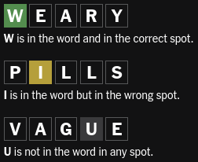

How to Play
You have 6 tries to guess the word!
- Each guess should be a real 5-letter word.
- Different colours are used to show how close your guess is to the actual word.
Examples

A random word to be guessed is generated every time the game is run (or when the user selects "Play Again" after they win or lose).